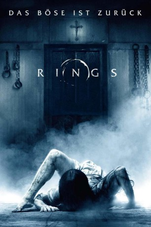

#6085 Rings
 
 IMDB-Wertung: 4.5 / 10
IMDB-Wertung: 4.5 / 10  Tomatometer: 8
Tomatometer: 8  Metascore: 25
Metascore: 25 
Nachdem Holt anfängt, sich mit dem Kult um ein mysteriöses Video zu beschäftigen, distanziert er sich zunehmend von seiner Freundin Julia und weist noch andere auffällige Verhaltensmuster auf. Es heißt, dass jeder, der das Video gesehen hat, sieben Tage später stirbt. Doch es hat noch etwas anderes mit dem Film auf sich, was wir bisher aus keinem „Ring“-Teil kennen… Sequel zu den Horrorfilmen „Ring“ und „Ring 2“, in denen der Geist eines Mädchens namens Samara die Journalistin Rachel Keller heimsuchte. „Rings“ spielt 13 Jahre nach dem zweiten Teil.
Jahr: 2017
Dauer: 102 Minuten
FSK: 16
Land: USA Studio: Paramount PicturesTonspuren: DD5.1 - ,
Untertitel: Deutsch,
Auflösung: 1080p (1920x1080) Größe: 5847 MB
Genre: Horror, Drama
Regisseur: F. Javier Gutiérrez
Drehbuch: Rita Falk
Soundtrack:
Darsteller:
- Matilda Anna Ingrid Lutz als Julia
- Alex Roe als Holt
 Johnny Galecki als Gabriel
Johnny Galecki als Gabriel Vincent D'Onofrio als Burke
Vincent D'Onofrio als Burke- Aimee Teegarden als Skye
- Bonnie Morgan als Samara
- Chuck David Willis als Blue
- Patrick R. Walker als Jamal
- Zach Roerig als Carter
- Laura Wiggins als Faith
 Lizzie Brocheré als Kelly
Lizzie Brocheré als Kelly Karen Ceesay als Flight Attendant
Karen Ceesay als Flight Attendant- Dave Blamy als First Officer
- Michael E. Sanders als Pilot
 Randall Taylor als Holt's Father
Randall Taylor als Holt's Father- Drew Grey als Sam
- Kayli Carter als Evelyn
 Jill Jane Clements als Karen Styx
Jill Jane Clements als Karen Styx- Ricky Muse als AA Member
- Jeremy Harrison als Highway Patrolman
- Jay Pearson als Highway Patrolman
- Rose Bianco als Waitress
- Ryan Lewis als AA Leader
 Adam Fristoe als Chris
Adam Fristoe als Chris Rick Baker als Vendor
Rick Baker als Vendor- Zoe Pessin als Samara VO
- Francis Dobrisky als Hardware Store Manager , uncredited
- Hunter Flanagan als Boy on Bike , uncredited
- Chris Greene als Officer Martinez , uncredited
- Billy James als Flea Market Vendor , uncredited
- Hannah Lori als Nightmare Tormentor , uncredited
- Melvin Kindall Myles als Flee Market Vendor , uncredited
- Arjen Tuiten als Sevens Student , uncredited
- Brice Anthony Heller als Business Man , uncredited
- Adam C. Johnson als College Student , uncredited
- Chris Russell als Customer , uncredited
Datei: X:\HD-Eastern-Collections\Ringu\Rings (2017, FSK16, 1920x1080).mkv seit 28.04.2017
Festplatte: HD Eastern+Western
 Es gibt insgesamt 9 Filme in der Gruppe 'HD-Eastern-Collections\Ringu'
Es gibt insgesamt 9 Filme in der Gruppe 'HD-Eastern-Collections\Ringu'